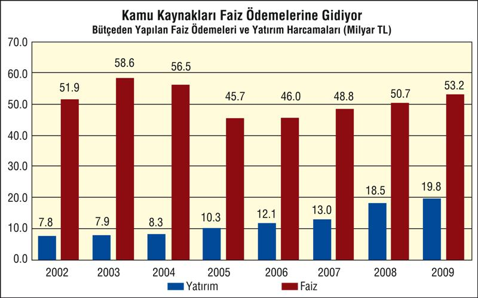

Verginin yükü alt-orta sınıfa daha fazla yıkılır, işsizlik sigortası kaynakları, kamu kuruluşlarının özelleştirmeden ortaya çıkan kaynakları neoliberal politikalarının bütçe açıklarını daraltmak için kullanılırken harcamalar, ağırlıkla yine faiz harcamalarında.
2006 yılında her 100 liralık bütçe harcamasının 26 liralık kısmını faiz ödemeleri meydana getirdi. 2007 yılında da faiz ödemeleri bütçe harcamalarının yüzde 24'ü düzeyinde gerçekleşti. Faiz ödemeleri 2008 yılında ise bütçe harcamalarından yüzde 22,3 pay aldı.

Bütçeden en düşük pay ise yatırım harcamalarına ayrıldı. 2006 yılı bütçe harcamalarının sadece yüzde 6,8'i yatırım için harcandı. Yatırım harcamalarının bütçe içerisindeki payı 2007 yılında ise yüzde 6, 3'e geriledi. 2008 yılında ise yatırımlar bütçeden yüzde 7,9 pay aldı.
2009 yılında da 53,2 milyar TL faiz ödemesine karşılık, yatırımlar için 19,8 milyar TL ayrıldı.
Küresel durgunluk nedeniyle dünyanın birçok ülkesinde kamunun borçlanma faiz oranları sıfıra kadar yaklaşırken Türkiye'de de yüzde 7,12'ye kadar düştü. Buna rağmen Arjantin, Pakistan, Rusya, Brezilya gibi ülkelerle birlikte Türkiye dünyanın en yüksek faizini ödeyen ülkeler arasında yer almaya devam ediyor.
Birçok ülkede reel faiz sıfırın altına inerken Türkiye reel faiz ödemeye devam ediyor.
| REEL FAİZ VE ÜLKELER | Reel Faiz oranı, % |
| Arjantin | 11, 94 |
| Pakistan | 12, 21 |
| Rusya | 8, 75 |
| Brezilya | 8, 64 |
| Türkiye | 7, 12 |
| Çin | 1, 90 |
| Euro Bölgesi | 0, 67 |
| Japonya | 0, 32 |
| ABD | 0, 07 |